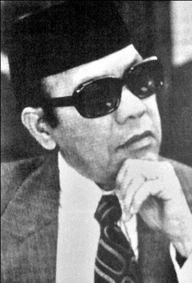

ABOUT US
For the sake of responsibility and sympathy towards the orphans, a group of community activists and senior officers of the Selangor State Government has successfully established and registered the "Selangor Orphan Education Organization" according to the ARS/Sel/50/66 Registration Number on 16 August 1966. With the approval of this registration, the Committee has moved vigorously to achieve its goals. With the services of Y.Bhg Allahyarham Dato' Haji Harun Idris and his wife Y.Bhg Datin Salmah Suleiman, the Selangor State Government has granted a piece of land in Mukim Hulu Kelang (HS.231) of 4.8 acres according to the approval document of phT. G.2/139/75.
FOUNDER
As a result of their hard work, several programmes were carried out such as Dinner, Prime Show and appeal to members, the Organization has successfully erected the Rumah bakti building at a cost of RM158,107.81. DYMM Almarhum Sultan Salahuddin Abdul Aziz Shah Alhaj ibni Almarhum Sultan Hisamuddin Alam Shah Sultan of Selangor has agreed to be the Patron of RBHK.In the early stages, the adoption of orphans began in 1976, with 26 people comprising 13 boys and 13 girls between the ages of 6 and 12. RBHK was officiated by His Majesty the Sultan of Selangor on 5 March 1977. From year to year the number of orphans has increased and to date in 2017, Rumah Bakti has been occupied by 66 orphans aged from 7 to 17 years old. On 2 March 1982 two new 2-storey dormitory blocks were completed. The two hostel blocks were worth RM600,000.00 and donated by the Selangor State Government and the proceeds of public donations. A surau was also built in 1984. In 2009 a new surau was built to replace the old surau. The new Surau was donated by Y.Bhg Datin Salmah Sulaiman, wife of the late Dato' Haji Harun Idris. RBHK acquired a new library in 1989.The library became the Resource Center in 1997. Since RBHK had obtained a new surau, the old surau which was built in 1984 was renovated into a new Resource Centre. The Resource Centre is divided into two sections, namely, the library and the computer room. In memory of the services of Y.Bhg Allahyarham Dato' Haji Harun Idris, members of the Selangor Children's Education Organisation have agreed to change the name of Rumah Bakti Hulu Kelang (RBHK) to Rumah Bakti Dato' Harun (RBDH) and thus the change of the emblem of Rumah Bakti was also changed and approved by the Registrar of Societies on 29 July 2011.
LOGO

Yellow - Protecting orphans to have faith, gratitude and responsibility
Red- Bold and insightful
Green- Children enlarged with guidance and brilliant lesson achievements
Black- Disciplined
White - Sincerity and cleanliness